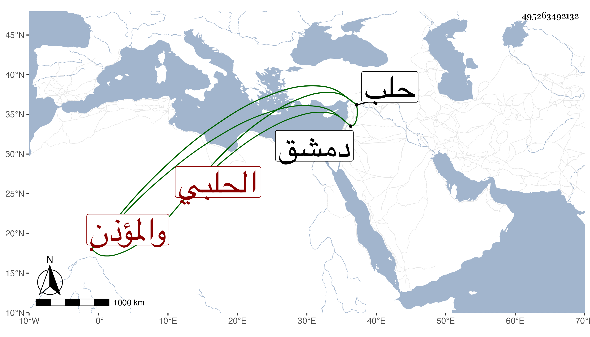

0902Sakhawi.DawLamic.ITO20230111-ara1.EIS1600.495263492132
Biography ID: 495263492132
183
محمد بن الحاج مقبل بن عبد الله الشمس أبو عبد الله الحلبي القيم بجامعها والمؤذن به أيضا ويعرف بشقير . كان والده عتيق بن زكريا البصروي التاجر بدمشق صيرفيا فولد له ابنه في سنة تسع وسبعين وسبعمائة بحلب ونشأ بها فسمع على الشهاب بن المرحل ثلاثيات مسند عبد وموافقاته بسماعه لها على التقي عمر بن إبرهيم بن يحيى الزبيدي أنابها ابن اللتي ، وأجاز له في استدعاء البرهان الحلبي ستة وثمانون نفسا منهم الصلاح بن أبي عمر خاتمة أصحاب الفخر بن البخاري وحدث سمع منه الفضلاء ولقيته بحلب بعد أن صار على طريقة حسنة وسيرة مرضية فأخذت عنه الكثير . وعمر بحيث تفرد عن أكثر شيوخه واستمر منفردا مدة حتى مات في رجب سنة سبعين ونزل الناس بموته درجة وقد ترجمه شيخنا بقوله قيم الجامع والمؤذن به رحمه الله .
